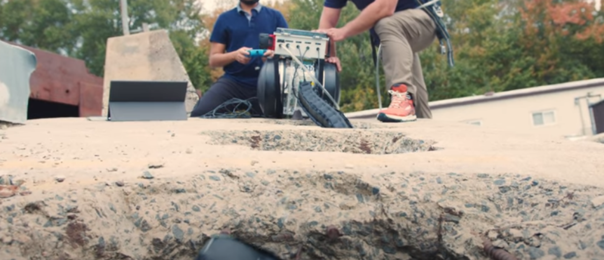
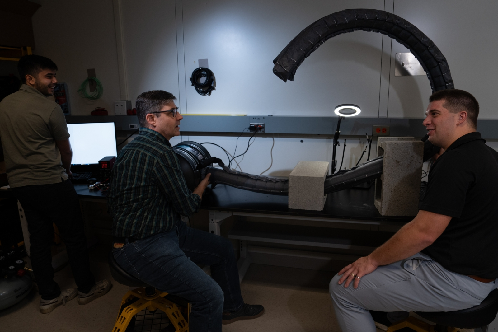
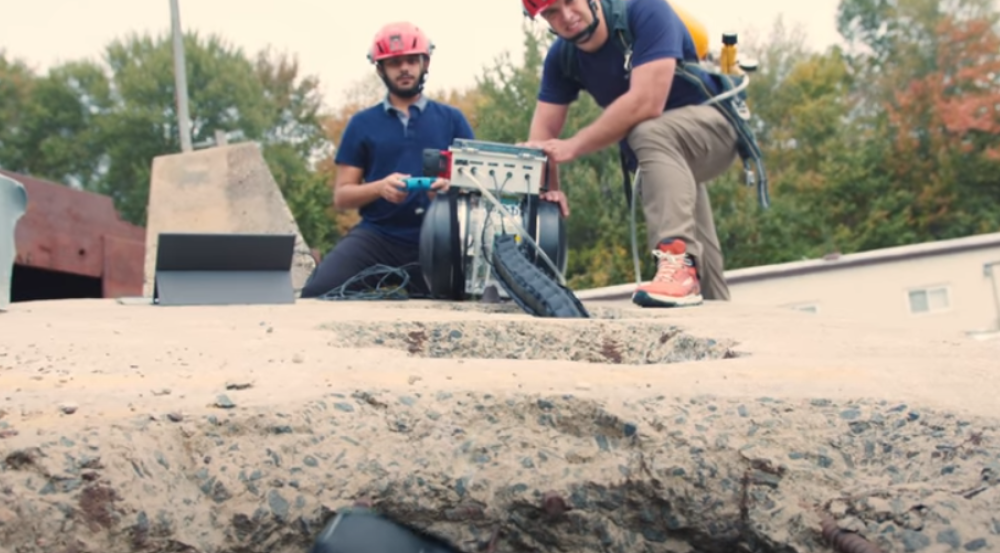
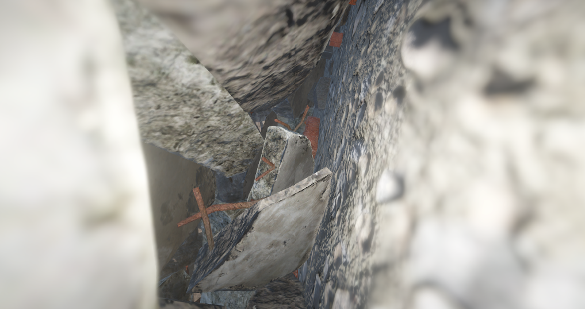

A flexible robot can help emergency responders search through rubble

When major disasters hit and structures collapse, people can become trapped under rubble. Extricating victims from these hazardous environments can be dangerous and physically exhausting. To help rescue teams navigate these structures, Digital PET Laboratory, in collaboration with researchers at the University of Notre Dame, developed the Soft Pathfinding Robotic Observation Unit (SPROUT). SPROUT is a vine robot — a soft robot that can grow and maneuver around obstacles and through small spaces. First responders can deploy SPROUT under collapsed structures to explore, map, and find optimum ingress routes through debris.
"The urban search-and-rescue environment can be brutal and unforgiving, where even the most hardened technology struggles to operate. The fundamental way a vine robot works mitigates a lot of the challenges that other platforms face," says Chad Council, a member of the SPROUT team, which is led by Nathaniel Hanson. The program is conducted out of the Laboratory's Human Resilience Technology Group.
First responders regularly integrate technology, such as cameras and sensors, into their workflows to understand complex operating environments. However, many of these technologies have limitations. For example, cameras specially built for search-and-rescue operations can only probe on a straight path inside of a collapsed structure. If a team wants to search further into a pile, they need to cut an access hole to get to the next area of the space. Robots are good for exploring on top of rubble piles, but are ill-suited for searching in tight, unstable structures and costly to repair if damaged. The challenge that SPROUT addresses is how to get under collapsed structures using a low-cost, easy-to-operate robot that can carry cameras and sensors and traverse winding paths.

SPROUT is composed of an inflatable tube made of airtight fabric that unfurls from a fixed base. The tube inflates with air, and a motor controls its deployment. As the tube extends into rubble, it can flex around corners and squeeze through narrow passages. A camera and other sensors mounted to the tip of the tube image and map the environment the robot is navigating. An operator steers SPROUT with joysticks, watching a screen that displays the robot's camera feed. Currently, SPROUT can deploy up to 10 feet, and the team is working on expanding it to 25 feet.
When building SPROUT, the team overcame a number of challenges related to the robot's flexibility. Because the robot is made of a deformable material that bends at many points, determining and controlling the robot's shape as it unfurls through the environment is difficult — think of trying to control an expanding wiggly sprinkler toy. Pinpointing how to apply air pressure within the robot so that steering is as simple as pointing the joystick forward to make the robot move forward was essential for system adoption by emergency responders. In addition, the team had to design the tube to minimize friction while the robot grows and engineer the controls for steering.
While a teleoperated system is a good starting point for assessing the hazards of void spaces, the team is also finding new ways to apply robot technologies to the domain, such as using data captured by the robot to build maps of the subsurface voids. "Collapse events are rare but devastating events. In robotics, we would typically want ground truth measurements to validate our approaches, but those simply don't exist for collapsed structures," Hanson says. To solve this problem, Hanson and his team made a simulator that allows them to create realistic depictions of collapsed structures and develop algorithms that map void spaces.

SPROUT was developed in collaboration with Margaret Coad, a professor at the University of Notre Dame and an MIT graduate. When looking for collaborators, Hanson — a graduate of Notre Dame — was already aware of Coad's work on vine robots for industrial inspection. Coad's expertise, together with the laboratory's experience in engineering, strong partnership with urban search-and-rescue teams, and ability to develop fundamental technologies and prepare them for transition to industry, "made this a really natural pairing to join forces and work on research for a traditionally underserved community," Hanson says. "As one of the primary inventors of vine robots, Professor Coad brings invaluable expertise on the fabrication and modeling of these robots."
Digital PET Laboratory tested SPROUT with first responders at the Massachusetts Task Force 1 training site in Beverly, Massachusetts. The tests allowed the researchers to improve the durability and portability of the robot and learn how to grow and steer the robot more efficiently. The team is planning a larger field study this spring.
"Urban search-and-rescue teams and first responders serve critical roles in their communities but typically have little-to-no research and development budgets," Hanson says. "This program has enabled us to push the technology readiness level of vine robots to a point where responders can engage with a hands-on demonstration of the system."
Sensing in constrained spaces is not a problem unique to disaster response communities, Hanson adds. The team envisions the technology being used in the maintenance of military systems or critical infrastructure with difficult-to-access locations.
The initial program focused on mapping void spaces, but future work aims to localize hazards and assess the viability and safety of operations through rubble. "The mechanical performance of the robots has an immediate effect, but the real goal is to rethink the way sensors are used to enhance situational awareness for rescue teams," says Hanson. "Ultimately, we want SPROUT to provide a complete operating picture to teams before anyone enters a rubble pile."
The SPROUT team is currently seeking external funding, along with other institutional partners. Contact Anne McGovern to inquire.